4.1.3 NGINX Ingress Controller에서 TLS termination(feats. Let’s Encrypt)
Ingress Controller에서 외부 수신을 SSL로 하기 위한 설정을 확인합니다.
Self-Signed 인증서 사용하기
테스트 목적으로 Self-Signed 인증서를 만들어 사용하는 방법을 확인해 봅니다. 실제 환경에서는 공인 인증기관에서 발급받은 인증서를 사용합니다. Self-Signed 인증서 발급 절차만 대체되어 TLS Secret 등록과정부터는 동일하게 수행됩니다.
참고 문서
인증서 만들기
-
Cloud Shell 또는 작업환경에서 다음 명령으로 인증서를 생성합니다. 공인 인증기관에서 발급받은 인증서 사용시 하지 않아도 됩니다.
openssl req -x509 -nodes -days 365 -newkey rsa:2048 -keyout tls.key -out tls.crt -subj "/CN=nginxsvc/O=nginxsvc" -
TLS Secret을 만듭니다.
kubectl create secret tls tls-secret --key tls.key --cert tls.crt -
실행결과
oke_admin@cloudshell:~ (ap-seoul-1)$ openssl req -x509 -nodes -days 365 -newkey rsa:2048 -keyout tls.key -out tls.crt -subj "/CN=nginxsvc/O=nginxsvc" Generating a 2048 bit RSA private key *************************************************************************************************************************************************************+++++ ****************************************************************************************************************************+++++ writing new private key to 'tls.key' ----- oke_admin@cloudshell:~ (ap-seoul-1)$ kubectl create secret tls tls-secret --key tls.key --cert tls.crt secret/tls-secret created
TLS Ingress 자원 배포
-
테스트를 위한 샘플 앱을 배포합니다. PATH 기반 라우팅 때 사용한 앱을 그대로 사용합니다.
kubectl create deployment nginx-blue --image=thekoguryo/nginx-hello:blue kubectl expose deployment nginx-blue --name nginx-blue-svc --port 80 kubectl create deployment nginx-green --image=thekoguryo/nginx-hello:green kubectl expose deployment nginx-green --name nginx-green-svc --port 80 -
ingress 설정 YAML(
tls-termination.yaml)을 작성합니다.- spec.tls.secretName으로 앞서 생성한 Self-Signed 인증서 이름을 사용합니다.
apiVersion: networking.k8s.io/v1 kind: Ingress metadata: name: ingress-tls-termination annotations: kubernetes.io/ingress.class: nginx spec: tls: - secretName: tls-secret rules: - host: blue.ingress.thekoguryo.ml http: paths: - path: / pathType: Prefix backend: service: name: nginx-blue-svc port: number: 80 - host: green.ingress.thekoguryo.ml http: paths: - path: / pathType: Prefix backend: service: name: nginx-green-svc port: number: 80 -
기존 테스트 ingress는 삭제하고, 작성한
tls-termination.yaml을 배포합니다.oke_admin@cloudshell:~ (ap-seoul-1)$ kubectl apply -f tls-termination.yaml ingress.networking.k8s.io/ingress-tls-termination created oke_admin@cloudshell:~ (ap-seoul-1)$ kubectl get ingress NAME CLASS HOSTS ADDRESS PORTS AGE ingress-tls-termination <none> blue.ingress.thekoguryo.ml,green.ingress.thekoguryo.ml 80, 443 5s
TLS 적용 결과 검증
-
ingress rule에서 적용한 host 명으로 각각 접속하여 결과를 확인합니다.
아래와 같이 https로 접속되고 Self-Signed 인증서로 인한 경고 메시지가 뜹니다.
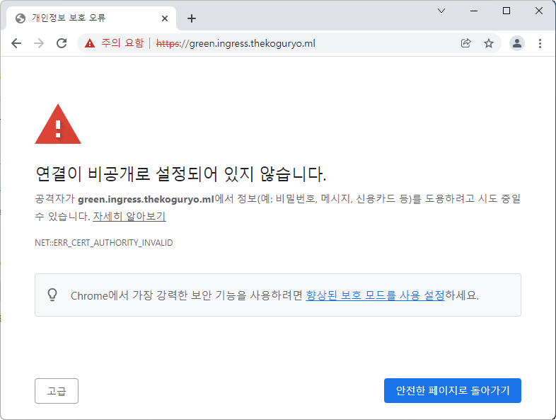
-
고급을 클릭하고 해당 페이지로 이동을 선택합니다.
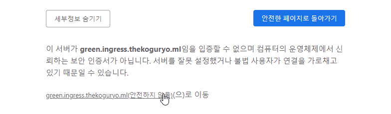
-
브라우저 주소창 메뉴를 통해 인증서 정보를 확인합니다. Self-Signed 인증서로 루트 인증서가 신뢰할 수 없다는 경고를 확인할 수 있습니다.
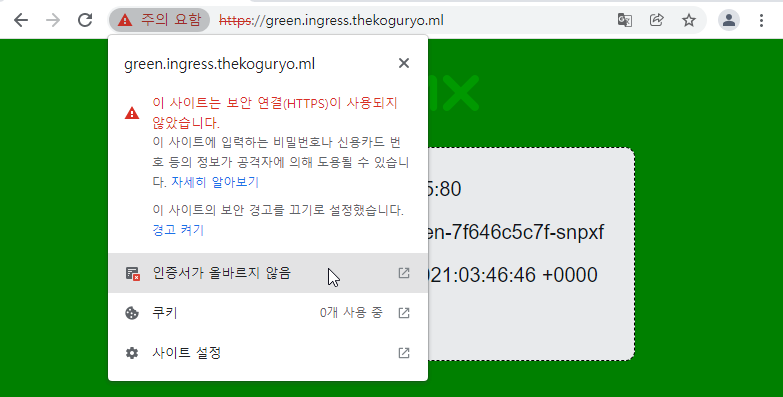
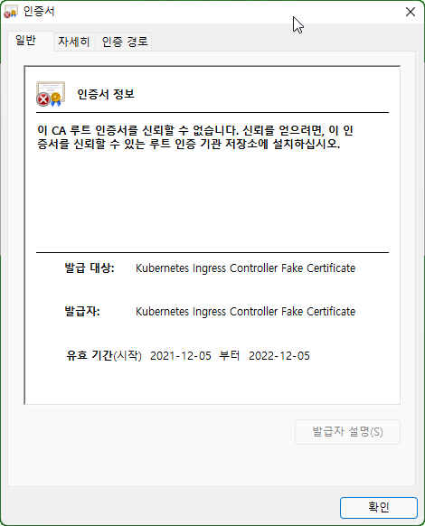
Let’s Encrypt & Cert Manager 사용하기
Let’s Encrypt는 무료 인증서 발급 사이트로 TLS에 사용할 인증서를 발급 받을 수 있습니다. 대신 90일 동안만 유효하며 만료전에 갱신해야 합니다. Kubernetes에서는 Cert Manager를 통해 자동으로 갱신할 수 있습니다.
설치 참고 문서
Cert Manager 배포
-
Cloud Shell 또는 작업환경에서 Cert Manager를 배포합니다.
kubectl apply -f https://github.com/jetstack/cert-manager/releases/download/v1.6.1/cert-manager.yaml -
설치 확인
cert-manager namespace에 자원들이 정상 실행중인 확인합니다.
oke_admin@cloudshell:~ (ap-seoul-1)$ kubectl get all -n cert-manager NAME READY STATUS RESTARTS AGE pod/cert-manager-55658cdf68-sk5nj 1/1 Running 0 18s pod/cert-manager-cainjector-967788869-b77w2 1/1 Running 0 18s pod/cert-manager-webhook-7b86bc6578-pnxtg 1/1 Running 0 18s NAME TYPE CLUSTER-IP EXTERNAL-IP PORT(S) AGE service/cert-manager ClusterIP 10.96.100.11 <none> 9402/TCP 19s service/cert-manager-webhook ClusterIP 10.96.212.15 <none> 443/TCP 19s NAME READY UP-TO-DATE AVAILABLE AGE deployment.apps/cert-manager 1/1 1 1 19s deployment.apps/cert-manager-cainjector 1/1 1 1 19s deployment.apps/cert-manager-webhook 1/1 1 1 19s NAME DESIRED CURRENT READY AGE replicaset.apps/cert-manager-55658cdf68 1 1 1 19s replicaset.apps/cert-manager-cainjector-967788869 1 1 1 19s replicaset.apps/cert-manager-webhook-7b86bc6578 1 1 1 18s
Let’s Encrypt Issuer 구성
본 예제에서는 Let’s Encrypt에서 제공하는 Staging Issuer, Production Issuer을 사용할 수 있습니다. 여기서는 테스트용도로 Staging Issuer를 사용하겠습니다.
-
Let’s Encrypt Staging Issuer 설정
https://cert-manager.io/docs/tutorials/acme/example/staging-issuer.yaml 파일에서 email 부분만 본인 것으로 수정하여 반영합니다.
네임스페이스에만 사용되는 Issuer가 아닌 전체 쿠버네티스 클러스터에 사용하기 위해 ClusterIssuer 유형을 사용합니다.
apiVersion: cert-manager.io/v1 kind: ClusterIssuer metadata: name: letsencrypt-staging spec: acme: # The ACME server URL server: https://acme-staging-v02.api.letsencrypt.org/directory # Email address used for ACME registration email: user@example.com # Name of a secret used to store the ACME account private key privateKeySecretRef: name: letsencrypt-staging # Enable the HTTP-01 challenge provider solvers: - http01: ingress: class: nginx -
Let’s Encrypt Production Issuer
Production Issuer도 https://cert-manager.io/docs/tutorials/acme/example/production-issuer.yaml 파일을 이용해 동일한 방식으로 설치할 수 있습니다. 다만 사용 limit로 인해 삭제, 생성을 반복할 경우 Rate Limit에 걸릴 수 있습니다.
-
설정 적용
oke_admin@cloudshell:$ (ap-seoul-1)$ kubectl create --edit -f https://cert-manager.io/docs/tutorials/acme/example/staging-issuer.yaml issuer.cert-manager.io/letsencrypt-staging created
TLS Ingress 자원 배포
-
테스트 앱은 이전 그대로 사용합니다.
-
ingress 설정 YAML(
tls-termination-cert-manager.yaml)을 작성합니다.- 문서 작성일 기준 (STAGING) Doctored Durian Root CA의 만료로 인해 staging issuer 사용시에도 유효하지 않은 인증서라고 나올 수 있습니다. cert manager issuer는 production issuer를 사용하겠습니다. 대신 production issuer는 생성을 반복할 경우 limit에 걸릴 수 있습니다.
- cert-manager.io/cluster-issuer: 방금 생성한 letsencrypt-staging 설정, issuer가 아닌 cluster-issuer를 사용합니다.
- spec.tls 하위에 tls 저장할 저장소 이름 및 발급받아 사용할 도메인 이름을 지정합니다
apiVersion: networking.k8s.io/v1 kind: Ingress metadata: name: ingress-tls-termination-cert-manager annotations: kubernetes.io/ingress.class: nginx cert-manager.io/cluster-issuer: "letsencrypt-staging" spec: tls: - secretName: ingress-thekoguryo-ml-tls hosts: - green.ingress.thekoguryo.ml - blue.ingress.thekoguryo.ml rules: - host: green.ingress.thekoguryo.ml http: paths: - path: / pathType: Prefix backend: service: name: nginx-green-svc port: number: 80 - host: blue.ingress.thekoguryo.ml http: paths: - path: / pathType: Prefix backend: service: name: nginx-blue-svc port: number: 80 -
기존 테스트 ingress는 삭제하고, 작성한
tls-termination-cert-manager.yaml을 배포합니다.oke_admin@cloudshell:ingress-nginx (ap-seoul-1)$ kubectl apply -f tls-termination-cert-manager.yaml ingress.networking.k8s.io/ingress-tls-termination-cert-manager created oke_admin@cloudshell:ingress-nginx (ap-seoul-1)$ kubectl get ingress NAME CLASS HOSTS ADDRESS PORTS AGE ingress-tls-termination-cert-manager <none> blue.ingress.thekoguryo.ml,green.ingress.thekoguryo.ml 80, 443 9s -
인증서 발급 확인
지정한 spec.tls.secretName으로 secret이 만들어지고, certificate 상태(READY)가 True가 되면 정상 발급되었습니다.
oke_admin@cloudshell:ingress-nginx (ap-seoul-1)$ kubectl get secret NAME TYPE DATA AGE default-token-jbv7p kubernetes.io/service-account-token 3 3d19h ingress-thekoguryo-ml-tls kubernetes.io/tls 2 15m letsencrypt-staging Opaque 1 16m oke_admin@cloudshell:ingress-nginx (ap-seoul-1)$ kubectl get certificate NAME READY SECRET AGE ingress-thekoguryo-ml-tls True ingress-thekoguryo-ml-tls 16m
TLS 적용 결과 검증
-
ingress rule에서 적용한 host 명으로 각각 접속하여 결과를 확인합니다.
아래와 같이 https로 접속되고 Self-Signed 인증서와 달리 경고 없이 유효한 인증서로 표시됩니다.
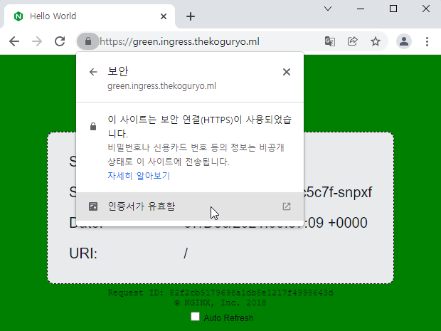
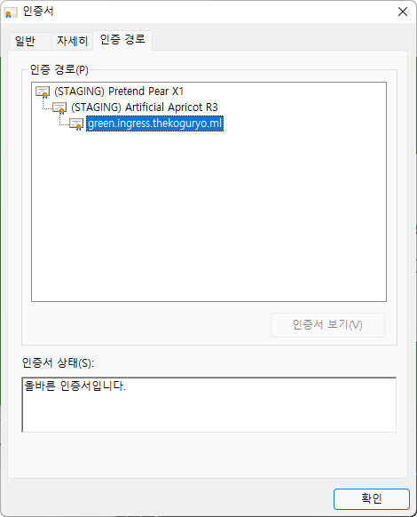
-
DNS 대체 주소에 요청한 host가 모두 등록되어, blue 앱도 인증에러 없이 접속됩니다.
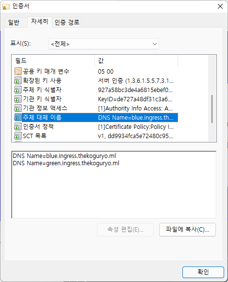
Let’s Encrypt Root CA 변경으로 인해 인증오류 해결
-
Staging Issuer를 사용할 경우, (STAGING) Doctored Durian Root CA X3 만료로 인해 웹브라우저 접속했을 때 인증 오류가 발생하는 경우가 있습니다. Production Issuer는 해당 문제가 발생하지 않습니다.
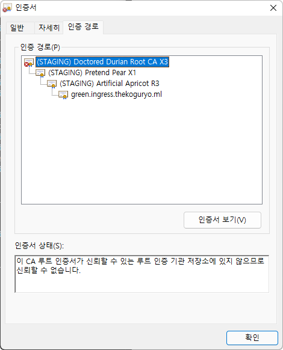
-
해당 에러가 발생하는 경우 변경된 새 Root CA를 let’s encrypt 사이트에서 다운 받아 브라우저에 등록해 줍니다.
-
파일 다운로드
https://letsencrypt.org/certs/staging/letsencrypt-stg-root-x1.pem
-
브라우저에 다운받은 Root CA 추가(크롬 브라우저 기준)
-
크롬 브라우저 > 설정 > 개인정보 및 보안 > 인증서 관리 로 이동
-
인증서 가져오기 클릭
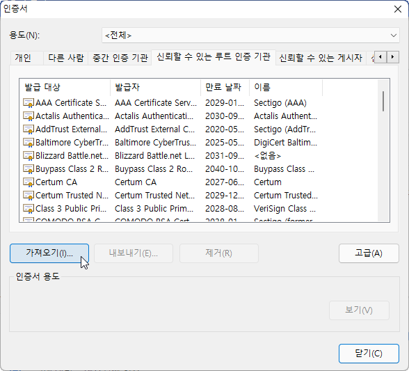
-
다운받은 파일 선택
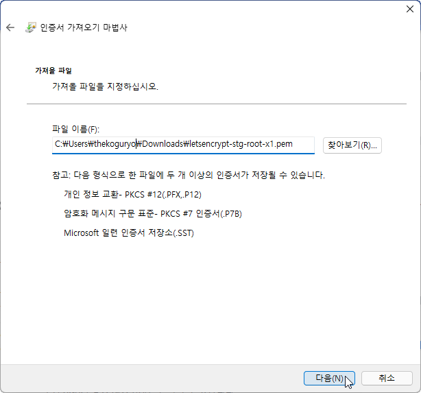
-
인증서 설치
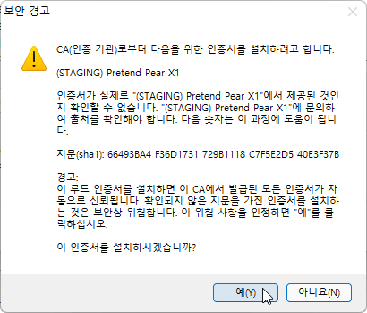
-
인증서 등록후 확인
신뢰할 수 있는 루트 인증 기관에 방금 등록한 (STAGING) 인증서가 보임
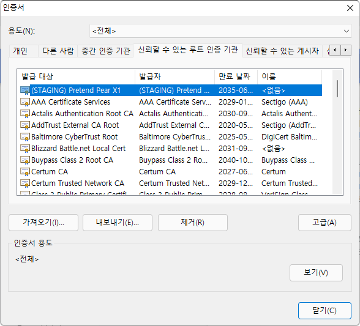
-
인증서가 등록후 다시 앱의 웹페이지를 접속하면 인증오류가 발생하지 않고, 인증 경로가 아래와 같이 보이게 됩니다.
-
** 이 글은 개인으로서, 개인의 시간을 할애하여 작성된 글입니다. 글의 내용에 오류가 있을 수 있으며, 글 속의 의견은 개인적인 의견입니다. **